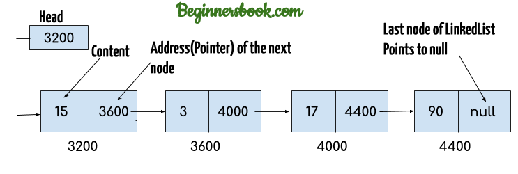
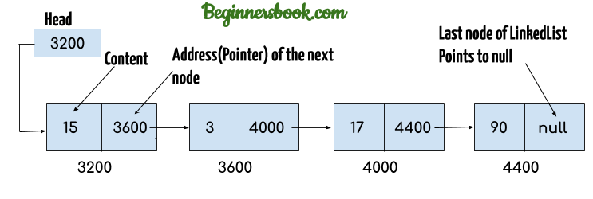

int i, char c, float f
int a[10], char c[20]
char st_name[20];
char st_fam_name[20];
int id;
int grade;
struct {
<variable declaration>
} <identifier list>;
struct{
char st_name[20];
char st_fam_name[20];
int id;
int grade;
} st1;
struct{
char st_name[20];
char st_fam_name[20];
int id;
int grade;
} st1, st2, st3;
struct <tag> {
<variable declaration>
};
struct <tag> <identifier list>;
struct std_info {
char st_name[20];
char st_fam_name[20];
int id;
int grade;
};
struct std_info st1, st2, st3;
/* Assign new name integer to type int */
typedef int integer;
/* Use the new name */
integer i, j, k;
/* Assign new name alephba to type char */
typedef char alephba;
/* Use the new name */
alephba c1, c2;
/* Assign new name intptr to type int * */
typedef int * intptr;
/* Use the new name */
intptr pi, pj, pk;
typedef int int_arr1[10], int_arr2[20];
int_arr1 array1;
int_arr2 array2;
typedef int arr[100];
int main() {
arr a1;
arr a2;
a1 = a2; // error: array type 'arr' (aka 'int [100]') is not assignable
}
struct <tag> {
<variable declaration>
};
typedef struct <tag>
<new_name>;
<new_name> <identifier list>;
struct std_info{
char st_name[20];
char st_fam_name[20];
int id;
int grade;
};
typedef struct std_info information;
information st1, st2;
typedef struct {
<variable declaration>
} <new_name>;
<new_name> <identifier list>;
typedef struct {
char st_name[20];
char st_fam_name[20];
int id;
int grade;
} information;
information st1, st2;
struct test_size{char c, int i}sizeof(struct test_size) = 8
struct std_info st1 = {"Parham", "Alvani", 9231058, 18};
#include <stdio.h>
typedef struct {
char name[20];
char fam_name[20];
int id;
int grade;
} information;
void main(void){
information st2, st1 = {"Parham", "Alvani", 9231058, 20};
printf("After init: \n");
printf("Name = %s, \nFam. Name = %s, \nid = %d, \ngrade = %d\n", st1.name, st1.fam_name, st1.id, st1.grade);
scanf("%s", st2.name);
scanf("%s", st2.fam_name);
scanf("%d", &st2.id);
scanf("%d", &st2.grade);
printf("Your Input is: \n");
printf("Name = %s, \nFam. Name = %s, \nid = %d, \ngrade = %d\n", st2.name, st2.fam_name, st2.id, st2.grade);
}
struct date_type{
int day, month, year;
};
typedef struct{
char name[20];
char fam_name[20];
int id;
int grade;
struct date_type date;
} information;
information st1 = {"A", "B", 1, 10, {2, 3, 1368}};
information st2;
// st2.name = "C"; char[20] is not assignable
// st2.fam_name = "D"; char[20] is not assignable
st2.id = 2;
st2.grade = 15;
st2.date.day = 10;
st2.date.month = 5;
st2.date.year = 1390;
struct person {
char name[200];
char family[200];
};
char hello[200] = "Hello world";
printf("%s\n", hello);
hello[0] = 'h';
printf("%s\n", hello);
// hello = "123";
struct person p1 = {"Parham", "Alvani"};
printf("%s\n", p1.name);
p1.name[0] = 'p';
printf("%s\n", p1.name);
// p1.name = "123";
struct date_type{
int day, month, year;
};
struct date_type d1, d2 = {2, 1, 1360};
d1 = d2;
/*
d1.day = d2.day;
d1.month = d2.month;
d1.year = d2.year;
*/
struct test_type{
char name[10];
int id[10];
};
struct test_type d1, d2 = {"ABC", {1, 2, 3}};
d1 = d2;
/*
d1.name = "ABC";
d1.id = {1, 2, 3};
*/
information st1, st2;
if(st1 <= st2){
// Compile Error ...
}
if(
(st1.id == st2.id) &&
(strcmp(st1.name, st2.name) == 0) &&
(strcmp(st1.fam_name, st2.fam_name) == 0)
) {
/* st1 == st2 */
}
if (
(st1.id > st2.id) &&
(strcmp(st1.name, st2.name) == 0) &&
(strcmp(st1.fam_name, st2.fam_name) == 0)
) {
/* st1 > st2 */
}
struct std1{
int id;
int grad;
};
struct std1 std_arr[20];
typedef struct{
int id;
int grad;
} std2;
std2 std_arr[20];
#include <stdio.h>
int main(void){
struct std {
int id;
int grade;
};
const int num = 25;
double sum, average;
int i;
struct std std_arr[num];
for (i = 0; i < num; i++){
printf("Enter ID and grade\n");
scanf("%d", &(std_arr[i].id));
scanf("%d", &(std_arr[i].grade));
}
sum = 0;
for(i = 0; i < num; i++)
sum += std_arr[i].grade;
average = sum / num;
for (i = 0; i < num; i++)
if (std_arr[i].grade >= average)
printf("Student %d passed\n", std_arr[i].id);
return 0;
}
#include <stdio.h>
int main(void) {
struct std{
char name[20];
int id;
int grade;
};
const int num = 25;
struct std std_arr[num];
int sid, i;
for (i = 0; i < num; i++){
printf("Enter Name, ID and grade\n");
scanf("%s", std_arr[i].name);
scanf("%d", &(std_arr[i].id));
scanf("%d", &(std_arr[i].grade));
}

printf("Enter Search ID: ");
scanf("%d", &sid);
for (i = 0; i < num; i++) {
if (std_arr[i].id == sid) {
printf("Found:\n");
printf("Name = %s\n", std_arr[i].name);
printf("ID = %d\n", std_arr[i].id);
printf("Grade = %s\n", std_arr[i].grade);
}
}
return 0;
}
struct std{
int id;
int grade;
};
struct std st1;
struct std *ps;
ps = &st1;
struct std {
int id;
int grade;
};
struct std st1, *ps;
ps = &st1
// (*ps).id
int y = ps->id;
// (*ps).grade
int z = ps->grade;
void f(struct std s1); // call by value
void g(struct std *s2); // call by reference
struct std h(void); // return type
void print_st_info(information st){
printf("Name = %s\n", st.name);
printf("Fam = %s\n", st.fam_name);
printf("id = %d\n", st.id);
printf("grade = %d\n", st.grade);
}
// ----- Calling the function ----
information st1;
print_st_info(st1);
void read_st_info(information *pst) {
scanf("%s", pst->name);
scanf("%s", pst->fam_name);
scanf("%d", &(pst->id));
scanf("%d", &(pst->grade));
}
// ----- Calling the function ----
information st1;
read_st_info(&st1);
struct student {
char first_name[200];
char last_name[200];
int id[200];
};
Sets ID field of student with given identification. As you may guess this function must recieve a pointer of student structure.
void student_set_id(struct student *std, int id) {
std->id = id;
}
Sets first name field of student with given Name As you may guess this function must recieve a pointer of student structure. But why?
void student_set_id(struct student *std, const char *name) {
strcpy(sed->first_name, name)
}
First name field of stduent is an array and as you may remember arrays name contains the address of array's first cell. So is the following code is correct? 🤔
void student_set_id_wrong(struct student *std, const char *name) {
strcpy(sed.first_name, name)
}
No. It doesn't change first name of given student structure.
Because C copies all of the structures' members, even if they are arrays, so Calling by Value makes a copy from each field of the structure that changing them doesn't change anything in the source.
As a rule of thumb always use pointer of structures in your functions even you don't want to change them. In case of read-only functions use const pointers to tell the users you don't want to change the given structure.
void student_print(const struct student *std) {
printf("Name: %s %s\n", std->first_name, std->last_name);
printf("ID: %d\n", std->id);
}
information create_st_info(void) {
information tmp;
scanf("%s", tmp.name);
scanf("%s", tmp.fam_name);
scanf("%d", &tmp.id);
scanf("%d", &tmp.grade);
return tmp;
}
// ----- Calling the function ----
information st1;
st1 = create_st_info();
struct node{
int info;
struct node *next;
};
Please note that we cannot have structures that contain themselves:
struct node{
int info;
struct node next;
}; // compile error
struct node conatins a pointer to its type.
struct node{
int info;
struct node *next;
};
// Returning pointer!?!
// Is it safe?
// Why?
struct node* node_construct(int i) {
struct node* nn = NULL;
nn = malloc(sizeof(struct node));
if (nn == NULL) {
return NULL;
}
nn->info = i;
nn->next = NULL;
return nn;
}
We can return the address of heap-allocated variables from functions. Heap variables are under our control, so they are continue existing after the function completes.
struct node* list = NULL;
list = node_construct(10);
list->next = node_construct(20);
list->next->next = node_construct(30);
void list_print(struct node *list){
struct node* current;
for(current = list; current != NULL; current = current-> next) {
printf("%d\n", current->info)
}
}
void list_push_back(struct node* list, struct node* nn){
struct node* current;
for(current = list; current-> next != NULL; current = current-> next);
current->next = nn;
nn->next = NULL;
}
X → Y → NULL
void list_pop_back(struct node* list) {
struct node* current = list;
while(current->next->next != NULL) {
current = current->next;
}
free(current->next);
current->next = NULL;
}
void list_push_front(struct node* list, struct node* nn) {
nn->next = list;
list = nn;
}
void list_push_front(struct node** plist, struct node* nn) {
nn->next = *plist;
*plist = nn;
}
X → Y → Z
void list_pop_by_info(struct node* list, int v) {
// find a node before the node that contains v
struct node* current = list;
for (current = list; current->next != NULL && current->next->info != v; current = current->next);
// there is no node that conaints v
if (current->next == NULL) {
return;
}
list_pop_next(current);
}
void list_pop_next(struct node* adjacent_to_delete_node) {
struct node* to_delete = adjacent_to_delete_node->next;
adjacent_to_delete_node->next = to_delete->next;
free(to_delete);
}
visitors[saturday], visitors[friday]
salary[april], salary[june]
enum tag {name_1, name_2, …, name_N};
enum week {sat, sun, mon, tue, wed, thu, fri};
sat = 0, sun = 1, mon = 2, …, fri = 6
enum year {feb, jan, mar, apr, may, jun, jul, aug, sep, oct, nov, des};
feb = 0, jan = 1, …, nov = 10, des = 11
We can assign the numbers
enum week {sat = 1, sun, mon, tue, wed, thu, fri};
sat = 1, sun = 2, mon = 3, …, fri = 7
enum condition {False = 0, True, No = 0, Yes, Ghalat = 0, Dorost};
False = No = Ghalat = 0
True = Yes = Dorost = 1
enum week { sat, sun, mon, tue, wed, thu, fri };
enum week day = sat;
for(day = sat; day <= fri; day++)
enum week {sat, sun, mon, tue, wed, thu, fri};
int visitors[7];
enum week day;
for(day = sat; day <= fri; day++)
scanf("%d", &visitors[day]);
enum test1 {t1, t2, t3};
enum test2 {t4, t5, t6};
enum test1 t1v = t1;
enum test2 t2v = t4;
if(t1v == t2v) → true
t1v = t5;
t2v = 100;
#include <stdio.h>
// Declaration of union is same as structures
union test {
int x, y;
};
int main()
{
// A union variable t
union test t;
t.x = 2; // t.y also gets value 2
printf("After making x = 2:\n x = %d, y = %d\n\n",
t.x, t.y);
t.y = 10; // t.x is also updated to 10
printf("After making y = 10:\n x = %d, y = %d\n\n",
t.x, t.y);
return 0;
}
After making x = 2:
x = 2, y = 2
After making y = 10:
x = 10, y = 10
#include <stdio.h>
union test1 {
int x;
int y;
} Test1;
union test2 {
int x;
char y;
} Test2;
union test3 {
int arr[10];
char y;
} Test3;
int main()
{
printf("sizeof(test1) = %lu, sizeof(test2) = %lu, "
"sizeof(test3) = %lu",
sizeof(Test1),
sizeof(Test2), sizeof(Test3));
return 0;
}
sizeof(test1) = 4, sizeof(test2) = 4, sizeof(test3) = 40